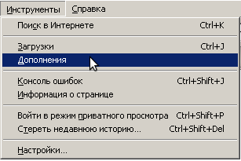
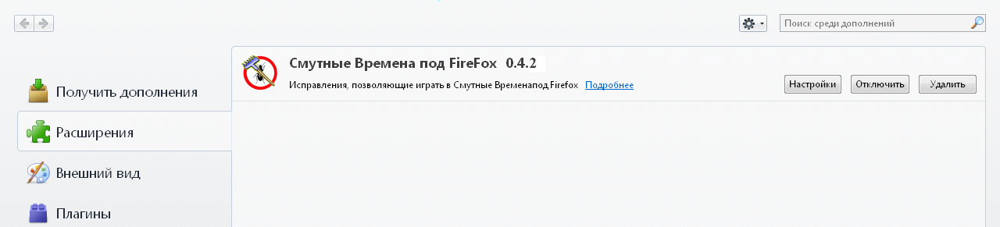
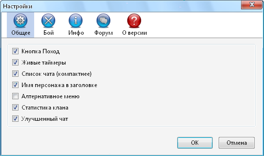

Настройка
Плугин обладает рядом дополнительных возможностей, которые выключены по умолчанию
Включить их можно в меню настроек

Перейдите Инструменты->Дополнения

Нажмите кнопку "Настройки" рядом с названием плугина

Перед вами откроется меню настроек плугина
О значении каждой настройки читайте в разделе "Возможности"